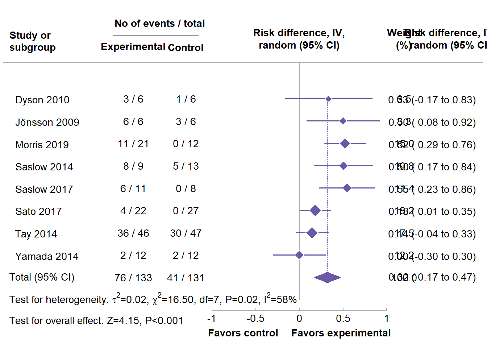

library(tidyverse)
library(metafor)25 create the dataset (from Goldenberg et al., 2021; https://doi.org/10.1136/bmj.m4743)
dat <- data.frame(author = c("Dyson", "Jönsson", "Morris", "Saslow", "Saslow", "Sato", "Tay", "Yamada"),
year = c(2010, 2009, 2019, 2014, 2017, 2017, 2014, 2014),
ai = c(3, 6, 11, 8, 6, 4, 36, 2),
n1i = c(6, 6, 21, 9, 11, 22, 46, 12),
ci = c(1, 3, 0, 5, 0, 0, 30, 2),
n2i = c(6, 6, 12, 13, 8, 27, 47, 12))
### calculate risk differences and corresponding sampling variances (and use
### the 'slab' argument to store study labels as part of the data frame)
dat <- escalc(measure="RD", ai=ai, n1i=n1i, ci=ci, n2i=n2i, data=dat,
slab=paste(" ", author, year), addyi=FALSE)
dat### fit random-effects model (using the DL estimator)
res <- rma(yi, vi, data=dat, method="DL")
res
Random-Effects Model (k = 8; tau^2 estimator: DL)
tau^2 (estimated amount of total heterogeneity): 0.0247 (SE = 0.0244)
tau (square root of estimated tau^2 value): 0.1570
I^2 (total heterogeneity / total variability): 57.58%
H^2 (total variability / sampling variability): 2.36
Test for Heterogeneity:
Q(df = 7) = 16.5018, p-val = 0.0209
Model Results:
estimate se zval pval ci.lb ci.ub
0.3172 0.0764 4.1540 <.0001 0.1676 0.4669 ***
---
Signif. codes: 0 '***' 0.001 '**' 0.01 '*' 0.05 '.' 0.1 ' ' 1############################################################################
### colors to be used in the plot
colp <- "#6b58a6"
coll <- "#a7a9ac"
### total number of studies
k <- nrow(dat)
### generate point sizes
psize <- weights(res)
psize <- 1.2 + (psize - min(psize)) / (max(psize) - min(psize))
### get the weights and format them as will be used in the forest plot
weights <- fmtx(weights(res), digits=1)
### adjust the margins
par(mar=c(2.7,3.2,2.5,1.3), mgp=c(3,0,0), tcl=0.15)
### forest plot with extra annotations
sav <- forest(dat$yi, dat$vi, xlim=c(-3.4,2.1), ylim=c(-1,k+3), alim=c(-1,1), cex=0.88,
header=FALSE, pch=18, psize=psize, efac=0, refline=NA, lty=c(1,0), xlab="",
ilab=cbind(paste(dat$ai, "/", dat$n1i), paste(dat$ci, "/", dat$n2i), weights),
ilab.xpos=c(-1.9,-1.3,1.2), annosym=c(" (", " to ", ")"), rowadj=-.07)
### add the vertical reference line at 0
segments(0, -1, 0, k+1.6, col=coll)
### add the vertical reference line at the pooled estimate
segments(coef(res), 0, coef(res), k, col=colp, lty="33", lwd=0.8)
### redraw the CI lines and points in the chosen color
segments(summary(dat)$ci.lb, k:1, summary(dat)$ci.ub, k:1, col=colp, lwd=1.5)
points(dat$yi, k:1, pch=18, cex=psize*1.15, col="white")
points(dat$yi, k:1, pch=18, cex=psize, col=colp)
### add the summary polygon
addpoly(res, row=0, mlab="Total (95% CI)", efac=2, col=colp, border=colp)
### add the horizontal line at the top
abline(h=k+1.6, col=coll)
### redraw the x-axis in the chosen color
axis(side=1, at=seq(-1,1,by=0.5), col=coll, labels=FALSE)
### now we add a bunch of text; since some of the text falls outside of the
### plot region, we set xpd=NA so nothing gets clipped
par(xpd=NA)
### adjust cex as used in the forest plot and use a bold font
par(cex=sav$cex, font=2)
### add headings
text(sav$xlim[1], k+2.5, pos=4, "Study or\nsubgroup")
text(sav$ilab.xpos[1:2], k+2.3, c("Experimental","Control"))
text(mean(sav$ilab.xpos[1:2]), k+3.4, "No of events / total")
text(0, k+2.7, "Risk difference, IV,\nrandom (95% CI)")
segments(sav$ilab.xpos[1]-0.24, k+2.8, sav$ilab.xpos[2]+0.14, k+2.8)
text(c(sav$ilab.xpos[3],sav$xlim[2]-0.37), k+2.7, c("Weight\n(%)","Risk difference, IV,\nrandom (95% CI)"))
### add 'Favours control'/'Favours experimental' text below the x-axis
text(c(-1,1), -2.5, c("Favors control","Favors experimental"), pos=c(4,2), offset=-0.3)
### use a non-bold font for the rest of the text
par(cex=sav$cex, font=1)
### add the 100.0 for the sum of the weights
text(sav$ilab.xpos[3], 0, "100.0")
### add the column totals for the counts and sample sizes
text(sav$ilab.xpos[1:2], 0, c(paste(sum(dat$ai), "/", sum(dat$n1i)), paste(sum(dat$ci), "/", sum(dat$n2i))))
### add text with heterogeneity statistics
text(sav$xlim[1], -1, pos=4, bquote(paste("Test for heterogeneity: ",
tau^2, "=", .(fmtx(res$tau2, digits=2)), "; ",
chi^2, "=", .(fmtx(res$QE, digits=2)),
", df=", .(res$k - res$p), ", ",
.(fmtp(res$QEp, digits=2, pname="P", add0=TRUE, equal=TRUE)), "; ",
I^2, "=", .(round(res$I2)), "%")))
### add text for test of overall effect
text(sav$xlim[1], -2, pos=4, bquote(paste("Test for overall effect: ",
"Z=", .(fmtx(res$zval, digits=2)), ", ",
.(fmtp(res$pval, digits=3, pname="P", add0=TRUE, equal=TRUE)))))
escalc(
measure = "IRLN",
xi = Numerator,
ti = Denominator,
data = data.frame(Numerator=2,Denominator=100)
)log(2/100)[1] -3.912023